来源：https://lxkvj39q93t.feishu.cn/docx/TYNUd1gnQod6HaxltZVcfUI3nRf
大家好，我是佳文，中医学学士、深圳大学工商管理硕士（MBA）
GPT 提效航海教练、广东省人工智能训练师考评员
深圳健康管理师考试、全媒体运营师等多个考试命题人
现在是个小创业者，努力生存中
24年主业务：人社部人工智能训练师培训考试
一、如何选题
二、
近日，中国知网上线了知网AI智能写作平台
功能令人震惊的强大
与其他AI最大的区别就是无脑输出长文功能及标准的引用知网文献功能
对比了同样可以引用文献的秘塔，全文的完整性和连贯性上了一个大台阶
对比了同样可以输出论文的GPT，引用的文献不是“凭空创造”的
现在产品正在内测中，申请通过可以7天免积分使用，后续再使用就要消耗积分了
积分可以通过两种方式获得
1、氪金
2、邀请/被邀请送500积分
注册链接：点击此处，注册领取500积分
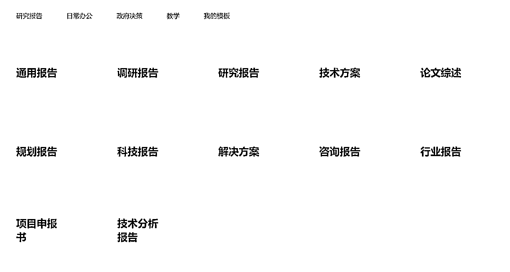
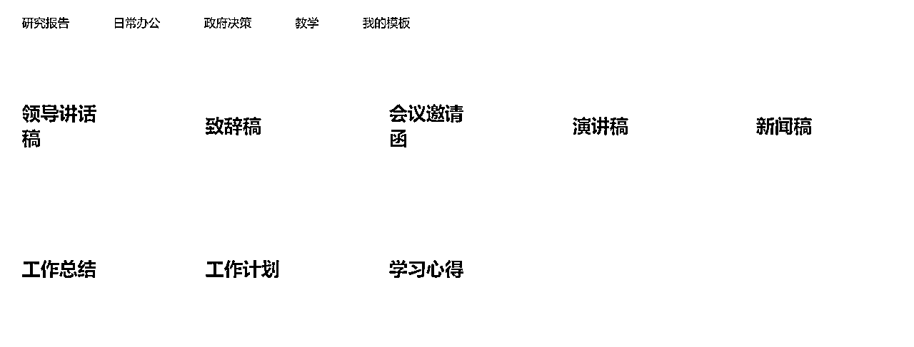
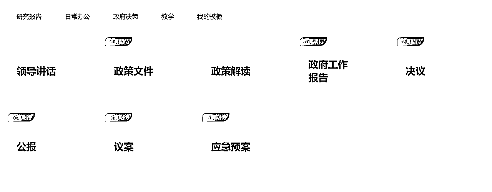
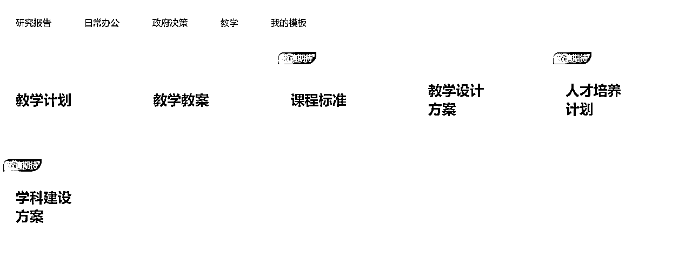
下面以科技报告为例，展示下知网AI写作的流程及功能
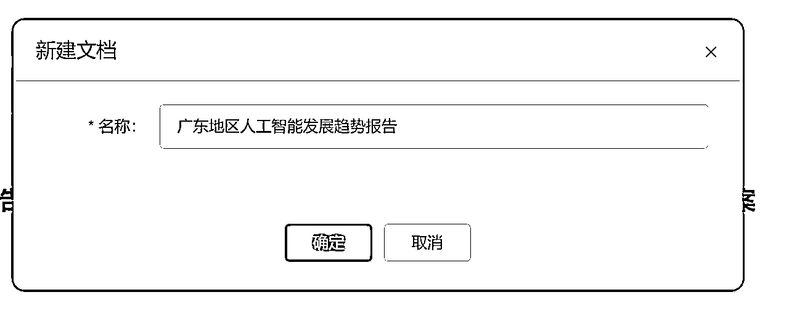
看到的是一个空白的word，右侧会有AI生成
在下方，可以选取我的知识库，也可以直接参考知网文献进行相关引用
这里只选择知网文献进行引用，生成大纲
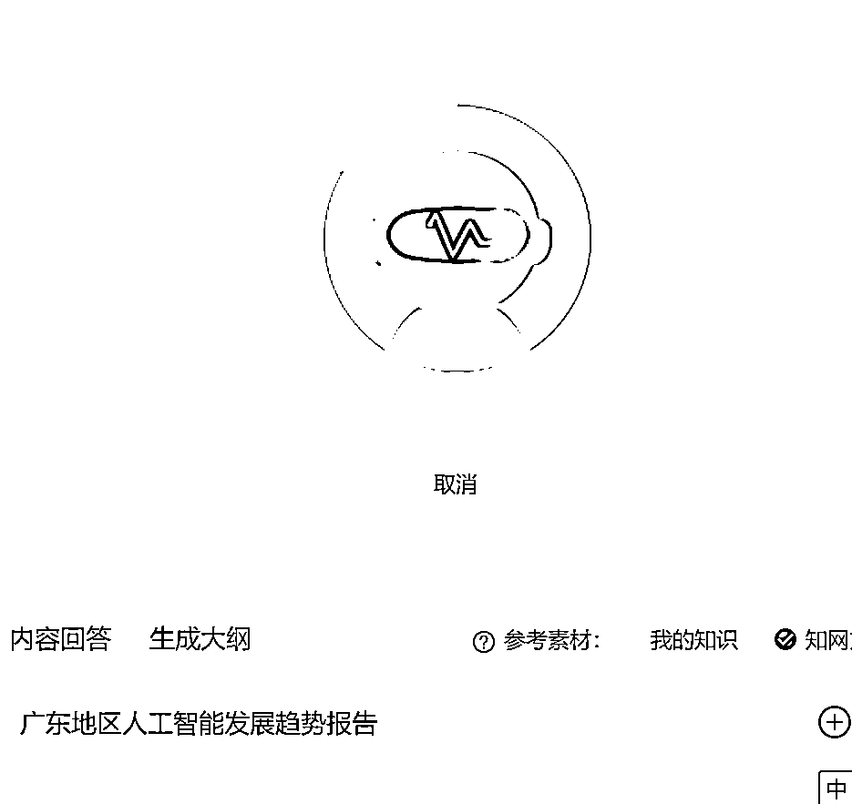
生成完大纲的时候会让你选择是否要继续生成概述
喝杯水的功夫，概述生成完了，恐怖如斯
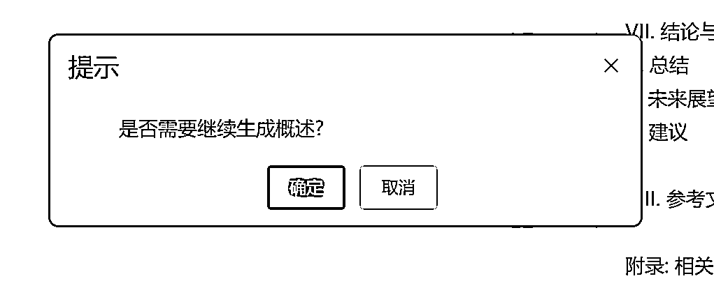
马上跳出了新窗口，是否要立即生成全文
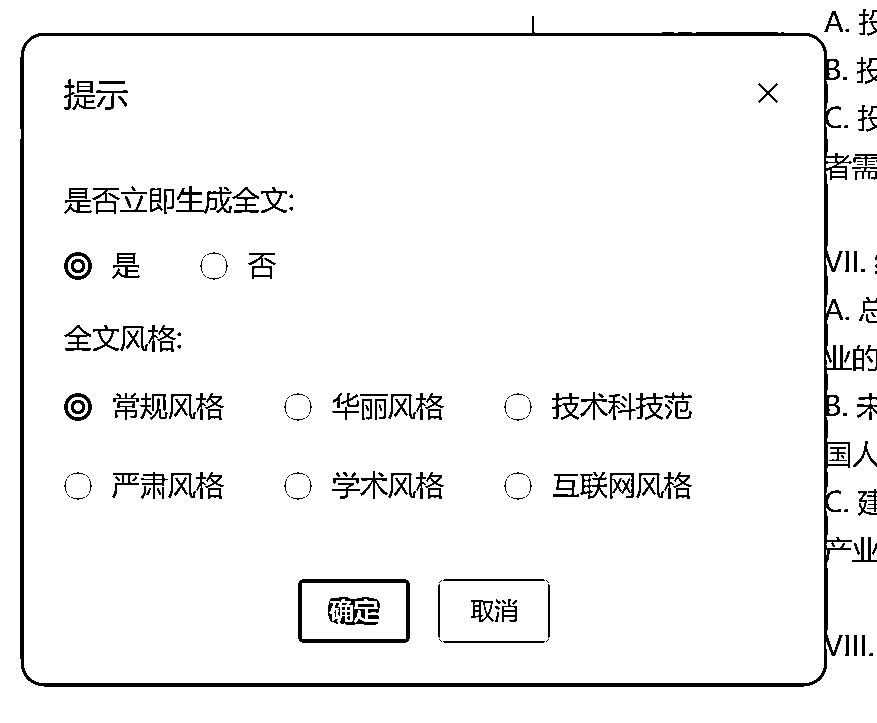
竟然还可以选择风格，666
这里根据主题，选个技术科技范的风格来生成
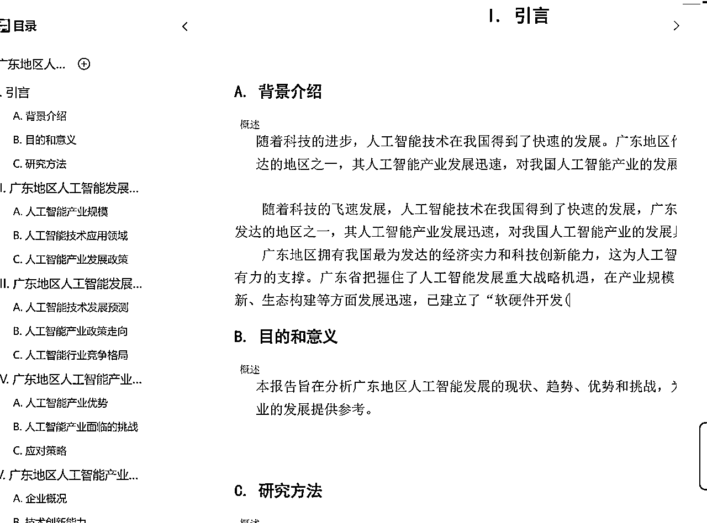
唰唰唰的开始写了
写完导出的时候还可以自动排版，这里就简单的默认排版了
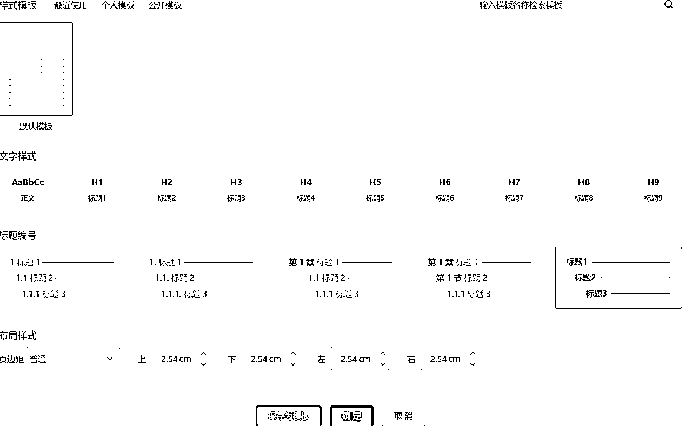
全文共计八章，16037 字，耗时11分钟
没有经过手工调整，没有修正，只是写了个选题（选题也可以用知网AI生成）
正文如下，有耐心的宝子可以看一下
再写几个别的吧~整体的操作是差不多的，多了一些选择性的内容
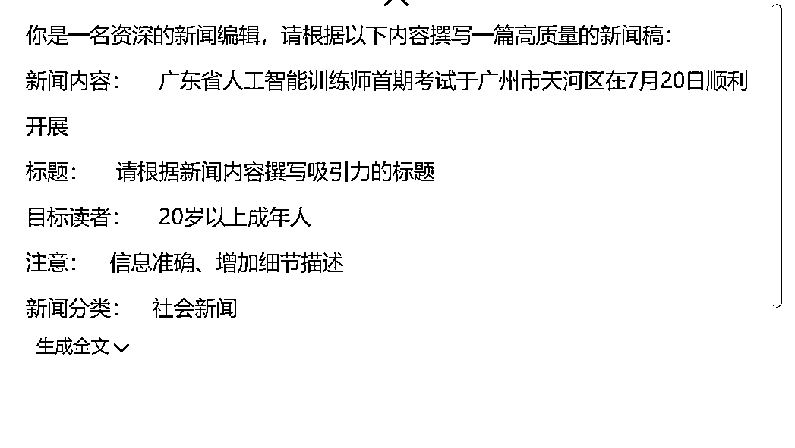
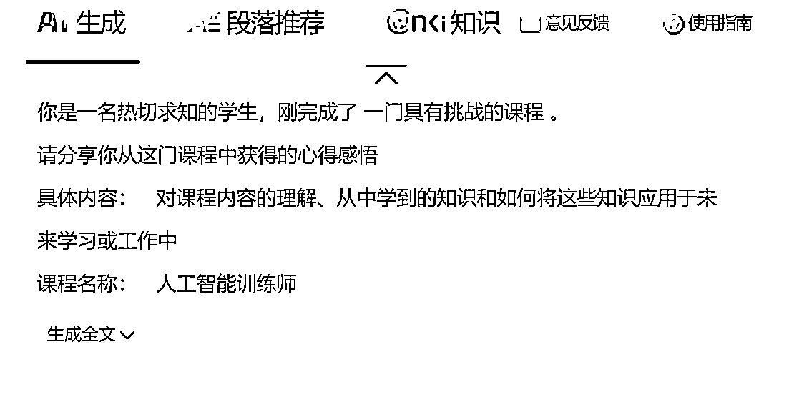

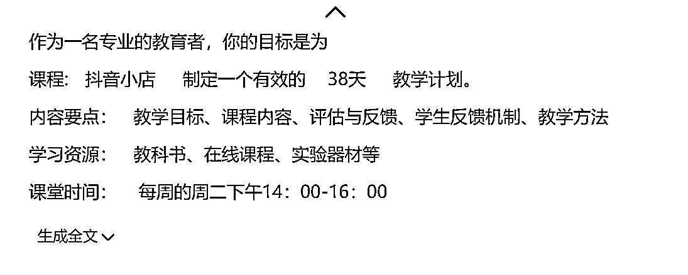
然后就会发现，虽然知网没有明说，有上限，但在内测期（免积分期）还是会规定可薅羊毛的次数
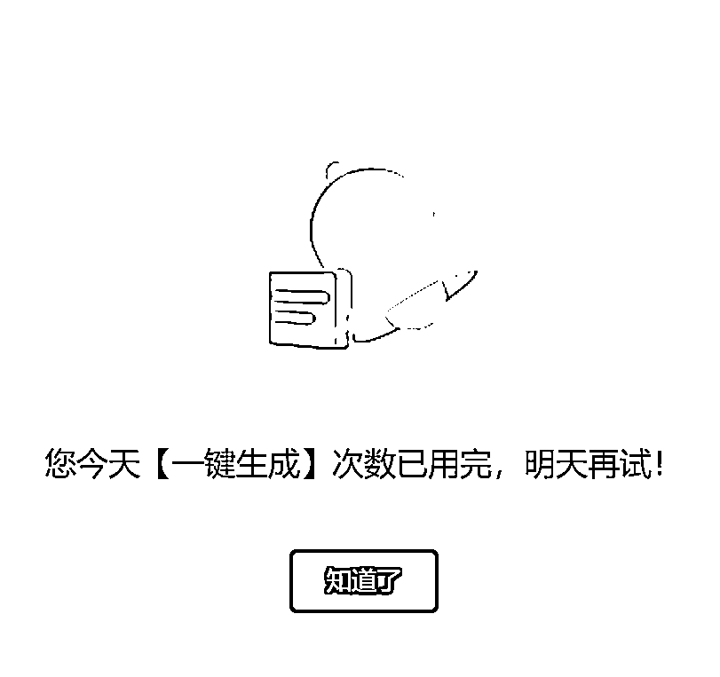
点击此处，注册领取500积分
说的不对的地方欢迎在下方评论区指正
从学科规划，到教案，再到课堂准备，再到每节课的发言稿，都可以直接AI完成了
教培行业的入行门槛再次降低
只要有主题，就可以快速的建立课程大纲，再结合AIPPT等工具，做出一门课也就是分分钟的事情
此处不再展开说明，知网的AI降低了AI代写的门槛，提高了AI代写的效率
可接单更容易了
无论哪个平台，只要是内测期，帐号都能卖钱，比如之前可灵，淘宝一直维持在50元/帐号的价格
结合现有的AI培训，把它作为一个不错的工具来用
能写公文诶~卖公文模板！
最后，祝大家将AI学起来，用起来，玩起来
为自己工作提效，能有更多的时间做更有意义的事情~
知网AI注册链接：点击此处，注册领取500积分